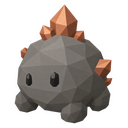
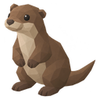
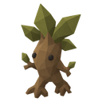
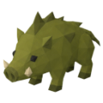
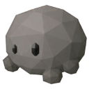
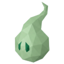
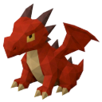
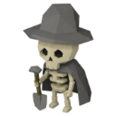
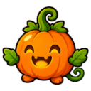

Pets
Rare companions found while training. A pet is equipped in the pet slot for a small bonus.
Skill pets
Found from any successful action in the skill, in any region.
| Pet | Source | Bonus |
|---|---|---|
 Oreling | ⛏️ Mining | +5% Mining XP |
 River Otter | 🎣 Fishing | +5% Fishing XP |
 Sprig | 🪓 Lumbering | +5% Lumbering XP |
| Sporeling | 🌿 Herbalism | +5% Herbalism XP |
Region pets
Found from any kill or gathering action in the region.
| Pet | Source | Bonus |
|---|---|---|
| 🌾 Ashvale | +5% coins from monsters | |
 Briar Cub | 🌲 Thornwood | 5% chance of an extra Lumbering resource |
 Pebble | 🕳️ Deepstone Mines | 5% chance of an extra Mining resource |
 Grave Wisp | 🏚️ Bleakhaven Ruins | +10% Prayer XP |
 Drakeling | 🌀 The Voidscar | +10% Slayer XP |
Dungeon pets
Found from clearing the dungeon.
| Pet | Source | Bonus |
|---|---|---|
 Graveling | The Ashvale Catacombs | 2 more loot rolls on every clear of its dungeon |
Festival pets
Only available while the festival is running.
| Pet | Source | Bonus |
|---|---|---|
 Pumpkling | Hallowed Eve 2026 | +5% Alchemy XP |
Drop mechanics
- Pet chances depend on time spent, not on actions: no training method, tool or temper finds pets faster.
- For monsters, longer kills have a higher chance per kill.
- A pet already owned gives 40,000 coins instead.
- Pets can't be traded. Owned pets show in the Collection Log, except festival pets.